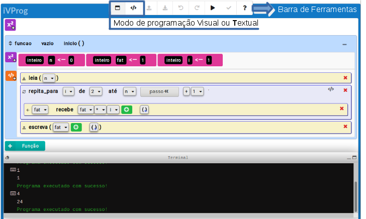

Mais sobre o Trabalho Final
O trabalho foi feito com base nos módulos da disciplina durante o 2° semestre de 2021. A princípio seria apenas 10 aulas para serem aplicadas com alunos do ensino médio, porém o professor/orientador Leonidas percebeu que seria uma boa introdução para a disciplina no próximo semestre e também fez modificações no mesmo. É possível encontrar o mini curso de IVProg pelo link a seguir: